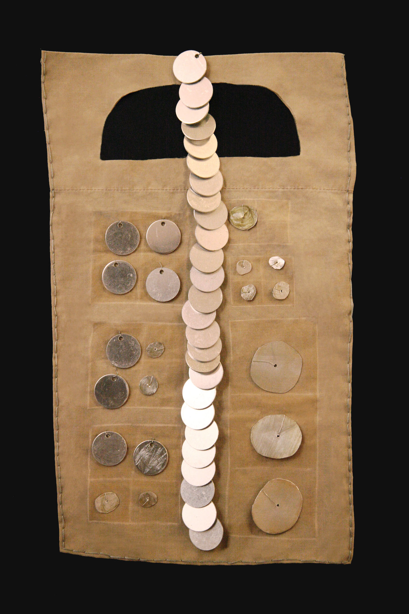
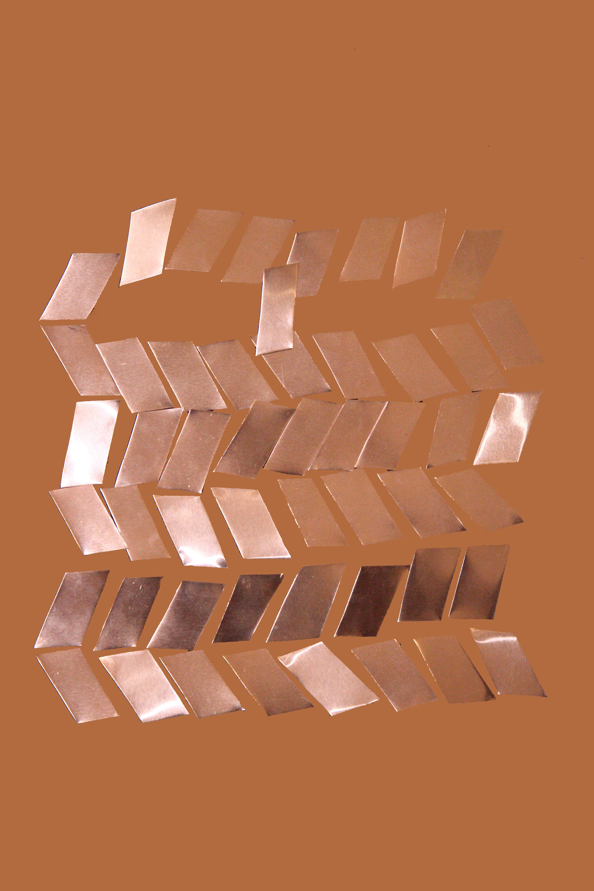

Mina Al Huqail
Toward // To ward
Mina Al Huqail is a Saudi-Greek multimedia artist who’s work encompasses metalwork,
embroidery and painting. Toward//To Ward, is a series of beduin inspired face masks
reimagined to include the changing landscapes of Saudi Arabia’s “progression” and who is
invited in/left out of these spaces. The patterns are devised from specific imagery of google
map views; these locations include petrochemical facilities, expat compounds, parks and
highways. Through a flattened God-like view, the maps offer us geometric forms reminiscent of
motifs in traditional Saudi craft. This work prompts conversations of mobility and access in the
exclusionary spatial practices of modernization.
Salam Park
Mina Al Huqail
Aluminum, steel wire, thread and
goauche on found fabric
15" x 8.5", 2020
Intersection
Mina Al Huqail
Aluminum, steel wire, thread and
chalk on found fabric
15" x 9", 2020
Complex
Mina Al Huqail
Aluminum, steel wire, thread and
chalk on found fabric
16" x 10", 2020

Petrochemical Compound
Mina Al Huqail
Aluminum, steel wire, thread and
goauche on found fabric
14.5" x 8.5", 2020

Petrochemical Compound
Mina Al Huqail
Aluminum, digital photo
2020
Checkpoint
Mina Al Huqail
Aluminum, steel wire, enamel
25" x 11", 2020